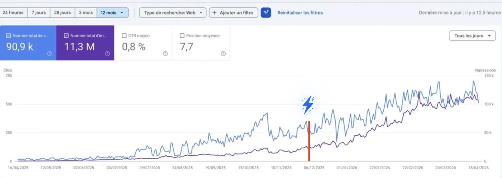

The Local SEO Playbook
for 2026
700 reviews and still stuck on page 2 of the map. Invisible in ChatGPT. Citations and blog posts that bring zero calls. Local visibility now happens on four surfaces at once, and most strategies only work on the first one. Here are the nine steps that cover all four, in the order that makes them work.
How one founder went from 250 to 750 clicks a day working this way →
The SEO agent for local SEO · 🎁 7 days free

Hey there, I'm Nicholas 👋
I grew my last B2C app to 15K Google clicks/month as a solo founder, then sold it. Turns out I fell in love with SEO along the way.
So now I'm building ChatSEO.app, an all-in-one SEO employee whose job is to make sure you rank #1 in Google and in AI search. This page is the local version of how it works. Try it free →
Local SEO in 2026 is broken for most people
Not because the tactics stopped working. Because the place where a customer finds you moved, and most strategies stayed where they were.
- 700 reviews, still stuck on page 2 of the map
- Invisible in ChatGPT
- Citations and blog posts that bring zero calls
Local visibility now happens on four surfaces at once:
The steps below run in a specific order. The order is the method. Each step feeds the next one, and two of them only exist because of what you measured in the first.
For the sake of this masterclass, let's take a dentist. Real practice, real teardown: a dental practice located in Ballwin, Missouri, with 700 Google reviews and a #20 position in its own city's map pack. Here's why, and how to fix it.
Step 1Benchmark four search surfaces before you touch anything
The instinct when you open a new site is to start fixing. Don't. Not even the obvious mistake you just spotted.
Take a snapshot first. If you fix things before you measure, you can never prove what worked. That matters for your own learning, and it matters ten times more if this is a client paying you a retainer: the benchmark is the only thing that turns "we did some SEO" into "we moved you from #20 to #8 and here's the before".
And the snapshot can't be "where do we rank on Google". For local, you track four surfaces:
What the snapshot records
- Map pack: your position for the core "service + city" query, and a geo-grid (the same query checked from multiple points across the city) so you see where in town you are weak, not just an average.
- Organic: rankings for your service pages, and which competitors sit above you on which engines.
- AI answers: whether the business is named when someone asks ChatGPT, Gemini, Perplexity, Claude and Grok for the best [service] in [city]. Yes or no, per platform.
- AI citations: the third-party sites those AI answers cite as their sources. Write every one down. This list becomes your to-do list in step 3.
Then install the three basics: Google Search Console, Google Analytics 4, and call tracking. For a local business, a call is the conversion. If you don't track calls, you're flying blind on the one metric the owner cares about, and you'll end up reporting rankings to someone who only wants to know if the phone rang.
The organic side of the snapshot is the easy part: connect Search Console and GA4 to ChatSEO and your baseline (queries, pages, clicks, positions) is there before you change a single line. That's your "before" for every fix that follows.
Build the "before" snapshot for [site URL], dated today, from Search Console and GA4 (last 28 days). Give me: 1. Total clicks, impressions and average position. 2. The top 20 queries and top 20 pages by clicks. 3. Every query that contains [city] or a neighbouring city name, with its clicks, impressions and position. 4. The pages that get impressions but almost no clicks. Do not suggest any fixes yet. This is the baseline, not the audit. If a number cannot be read from the data, say "cannot compute from this data". Do not estimate it.
For the dentist, the benchmark showed
- #20 in the local pack, with a geo-grid weak across Ballwin itself, the city the practice is in
- Decent organic rankings, with competitors ahead on several engines
- Visible in 4 AI platforms (Gemini, Perplexity, Claude, Grok), but not in ChatGPT, the one with the most users
- A clear list of third-party sites being cited in AI answers for local dentists
That last line becomes your to-do list later. Keep it.
Step 2Fix the Google Business Profile first, because it's the fastest lever you have
Here's the mistake. The practice is located in Ballwin. It serves Ballwin. But the profile was optimized for Chesterfield, the neighboring city.
So Google had a practice in Ballwin telling it, in effect, "I'm about Chesterfield". Result: #20 at home. Seven hundred reviews, and the single most important relevance signal was pointing at the wrong town.
The fix takes seconds. Point the profile at the city where you actually are.
Nobody should promise results in SEO. But this pattern shows up again and again, and fixing it alone often moves a profile 5 to 10 spots in the map pack. Same for the primary category: the wrong category is the other one-second fix that moves rankings. Here the category (Dentist) was already right, so location was the whole problem.
Why it's so powerful
Google's local ranking comes down to three things: relevance, distance and prominence. This practice already had prominence (700 reviews). It couldn't do anything about distance. It was losing on relevance to its own city. You don't need more reviews when the signal pointing Google at the right city is broken. More reviews on a mis-located profile is more prominence for the wrong query.
The GBP routine after the fix
- Keep driving Google reviews, consistently, not in bursts. A steady stream reads as a real business; fifty in a week then nothing reads as a campaign.
- Add more visual depth: photos of the office, the team, the equipment. Real photos, not stock.
- Recheck location and category every time someone touches the profile. An agency, an intern, a well-meaning owner: this is how the Chesterfield mistake happened in the first place.
That's it. Most people overcomplicate the GBP. Get the location and category right, then feed it reviews.
Step 3Find the 4 to 7 directories that AI engines actually cite
This is where the playbook breaks from how local SEO worked for a decade.
The old way: build citations in bulk. Submit to 100+ directories, tick the box, move on. Honestly, it barely mattered. Most of those directories had no readers, no authority and no effect beyond making an invoice look busy.
Citations matter again. But not as a volume game.
AI engines answer "best dentist in Ballwin" by retrieving pages and citing them. So the question is no longer "how many directories list us" but "which pages does the AI read before it answers". Go back to the AI citations data from Step 1 and look at which third-party sites appear. For this dentist, four came up:
- HealthGrades
- Delta Dental (the insurer's dentist directory)
- Yelp
- ADA.org
That's the list. Not 150 directories. Four.
Across most local industries, 4 to 7 citation sources actually show up. The rest are probably not worth your time at all.
This also means your citation list is different for every niche. A plumber's list won't include HealthGrades. A lawyer's will include sites a dentist never needs. A restaurant's will be dominated by review platforms. You don't guess it. You read it off the AI citations, and you re-read it every few months because the sources AI engines lean on move.
Step 4Do SEO on those directories, not just on your website
Being listed on HealthGrades isn't enough. You need to rank inside HealthGrades.
Search the directory for dentists in the area and the practice is buried far down the list. So when an AI engine retrieves that page, it sees other brands first. Being present on the right source and being invisible on it are the same thing from the AI's point of view.
Three moves to fix it.
1. Consider the sponsored slots
The HealthGrades results page had 3 sponsored listings at the top. AI engines don't care whether a listing is paid. They see the brands at the top of the page and weigh them because they're the most retrievable. If the directory is a top citation in your niche, a sponsored slot might be one of the cheapest AI visibility plays available. (Caveat in the honest section below: plausible, not yet proven. Test one directory before you buy all of them.)
2. Split your review effort 90/10
90% of your review requests go to Google. The other 10% go to these secondary review surfaces. That's how you climb inside the directory and give AI engines fresh signals from a source they already trust. You are not trying to match your Google review count on Yelp. You are trying to stop being the profile with two reviews from 2021.
3. Rewrite the profile like a web page
The practice's HealthGrades profile was thin. Strip out the directory boilerplate and you were left with roughly one sentence about what the practice does. Treat it exactly like a page on your site:
- Get the topics and entities that should be covered for your target (e.g. "cosmetic dentist Ballwin") from the pages already ranking for it
- Generate a full draft, around 500 words as a starting point
- If the platform has a character limit, compress it to 150 or 300 words while keeping the key topics
- Make sure each service you offer (veneers, implants, Invisalign) is covered naturally
In ChatSEO, that's one message: ask it to analyze the top results for your keyword and write the profile around what they cover, then ask for the 300-word version. You paste it into the directory yourself.
Analyze the top 10 results for "[cosmetic dentist Ballwin]". List the topics, entities and services those pages cover, and their word-count range. Then write a directory profile for [practice name] of about 500 words that covers those topics naturally and mentions each service we offer: [veneers, implants, Invisalign, ...]. Written for a reader choosing a dentist, not for a search engine. No keyword stuffing, no city name in every sentence. Then give me a 300-word version and a 150-word version that keep every key topic. Do not invent credentials, awards, years in business or patient numbers I did not give you. If you need a fact, ask.
Bonus: a well-optimized directory profile can rank in Google's organic results on its own. That's one more slot on page 1 that belongs to you, even though you don't own the domain.
Then repeat for every directory on your list. Optimize your website, then optimize your profiles.
Step 5Audit your brand's footprint for inconsistencies
AI engines build their picture of your business from everything written about it online. If that picture is contradictory, you lose trust and visibility.
One prompt in ChatGPT, using a reasoning model with web search, can scan the internet for inconsistencies about a business: two phone numbers, three spellings of the name, an address that moved in 2019 and is still on half the web.
For this practice, it found something no rank tracker would: the practice had changed hands. The current dentist took it over, and the web was still full of the previous dentist's info. Old names, old details, scattered across directories and profiles. To an AI engine, that reads as two businesses with the same address and conflicting facts, which is exactly the kind of entity it hesitates to recommend.
That's a massive to-do list from one prompt. Clean it up source by source, starting with the sites that appear in AI answers or on page 1. Those are the ones the AI reads; the rest can wait.
You can use Deep Research too, but a reasoning model with web search gets you a comparable report in a fraction of the time.
Search the web for every mention of [Business Name], [address] and [phone number]. List every inconsistency you find in business name, address, phone, hours, practitioner or owner name, services and website URL, across directories, review sites, social profiles, maps and news. For each one, give the source URL, what it says, the correct value, and a priority (high if the source appears in AI answers or on Google page 1). Flag anything linked to a previous owner, old address or old phone number.
Step 6Clean up the technical and on-page basics
Run a crawl and plug in GSC and GA4 if you have access. This site wasn't in bad shape. Two issues stood out, and they're the same two you'll find on most local sites.
Over-optimized title tags
The site had titles like "Dental Bonding in Ballwin, Missouri", which is fine. Then it had variations stacking the city, the state abbreviation and the ZIP code into the same title.
The rule: one clean version. "Dental Bonding in Ballwin, MO | Practice Name", or the dentist's name instead of the practice name. That's it.
The reasoning: LLMs and Google both understand that "Ballwin, Missouri", "Ballwin MO" and the ZIP code refer to the same place. Stuffing all three adds nothing, and it probably hurts you more than it helps, because it makes the page look like it was written for a machine.
Boilerplate meta descriptions
Many pages shared the same generic meta description. In 2026 there's no excuse for that: every page can have a unique description in minutes.
One rule most people miss. Don't put your phone number in the title or meta description. If the searcher can grab your number from the snippet, they don't click. Organic CTR feeds rankings, so a snippet that kills clicks costs you positions too.
Important: this only applies to traditional organic results. On your Google Business Profile, the phone number obviously stays. The profile's job is the call; the snippet's job is the click.
This is the step nobody should do by hand anymore. With ChatSEO connected to Search Console and your WordPress or Shopify site, you ask it to find the stuffed titles and duplicate metas, review the rewrites, approve, and they're live. For a 40-page local site, that's minutes instead of an afternoon.
Crawl [site URL] and cross it with Search Console. Find: 1. Every title tag that stacks more than one location signal (city + state + ZIP, or the same city twice). 2. Every meta description shared by more than one page. 3. Any title or meta description that contains a phone number. For each page, propose one clean title in the form "Service in City, ST | Practice Name" and a unique meta description under 155 characters with no phone number in it. Show me a before/after table with the page's current clicks and impressions next to each row so I can prioritise. Do not publish anything until I approve the table.
Step 7Build one page per service + city, and optimize it properly
The practice already had the right structure: dedicated pages like "Invisalign in Ballwin, Missouri". Service plus core location. Keep that structure.
The problem was the optimization of those pages. The homepage, for example, had too many words and was aggressive without being well optimized: long, repetitive, and not actually covering what the ranking pages cover.
What a good local page looks like
- A word count within the median range of the competitors ranking for that keyword. Not double. Not half.
- All the critical topics and entities covered for that service in that location
- Optimized for one primary topic and one location. One page, one job.
The workflow: look at what ranks for "cosmetic dentist Ballwin Missouri", list what those pages cover and how long they are, then write a page that matches the range and fills the gaps. ChatSEO runs that SERP analysis for you, drafts the page, and publishes it to your CMS once you've checked it. Design still needs a human pass.
Analyze the top results for "[Invisalign Ballwin Missouri]". Give me: 1. The median word count of the ranking pages, and the range. 2. The topics and entities every ranking page covers. 3. The topics only the top 3 cover. 4. The page type Google is rewarding (service page, location page, blog post, directory). Then draft a page for [practice name] targeting that one service in that one city: - inside the median word range, not above it - covering every topic from points 2 and 3 - optimized for one primary topic and one location, no second city on this page - with a short FAQ only if the ranking pages have one Flag any claim about the practice you could not verify from my site. Do not invent prices, before/after results or patient numbers.
Priority order: your main service pages first, then every secondary service. Only after that do you move to content. A blog post about implants doesn't help if the implants page itself is half the length of the ones ranking.
Where the prompts on this page stop. Steps 5, 8 and 9 run anywhere: paste the prompt, get the list. Steps 1, 6 and 7 don't. They need your live Search Console rows, a crawl of the actual site and a way to push the approved title back into the CMS. Paste-in prompts can't see the rows you didn't paste, can't refresh them next month, and can't check whether last week's fix moved the number. That gap is the whole reason ChatSEO connects to Search Console, GA4 and your CMS instead of asking you to copy things into a chat.
Step 8Write local content, not national content
This is the mistake almost every local blog makes.
The practice's blog had articles like "How long do dental implants last?". That's a national question. Thousands of sites answer it, AI answers it directly, and it does nothing for a practice that only serves Ballwin. Even if it ranked, the reader is in Oregon.
The rule: every piece of content should build relevance for your location and your expertise. Not general topics.
What that looks like in practice: statistics-driven, local linkbait. Content built on Ballwin-specific data that local news, bloggers and organizations would want to cite. A survey of local families, a price comparison across the area, a seasonal trend from your own appointment book. Some ideas will be good, some won't. But ideas are no longer the bottleneck. Execution is.
The prompt, which works in ChatGPT or directly in ChatSEO (where it also sees the queries your site already gets impressions for):
I run [business type] in [city, state]. Give me 15 content ideas built on local data I can collect or compile myself (a local survey, public records, price comparisons across the area, local rankings, seasonal trends). Each idea must be specific to [city], something local media, bloggers and organizations would want to reference. For each: the headline, the data source, and 3 local sites likely to link to it.
Step 9Prospect local links in one prompt
The last piece is off-site. Local links build local topical authority, the signal that says "this business belongs to Ballwin".
The point here is speed: one well-written prompt produces a full list of city-specific link prospects in about 4 minutes. Work that used to take a full day of manual prospecting, and that most local businesses therefore never did.
Find link opportunities for a [business type] in [city, state]. Include local news sites, chambers of commerce and business associations, local events open to sponsors, schools and sports clubs, local bloggers and podcasts, "best of [city]" lists, nonprofits, and complementary businesses. For each: name, URL, why they would link, and the exact angle to pitch.
Then you do the part AI can't: reach out, sponsor, show up. A link from the local youth soccer club is worth more to a Ballwin dentist than a guest post on a national dental blog, and it costs a sponsorship, not a content budget.
Why the order matters
Recap the sequence. It runs from cheapest and fastest to slowest and most compounding.
- Benchmark four surfaces (so you can prove every gain)
- Fix GBP location and category (fastest lever, biggest jump)
- Find the 4 to 7 directories AI cites (your citation list comes from data, not a template)
- Rank inside those directories (sponsored slots, 90/10 reviews, rewritten profiles)
- Clean up brand inconsistencies (so AI engines get one coherent story)
- Fix titles and metas (no ZIP stuffing, no phone numbers)
- Build and optimize service + city pages (service pages before any blog post)
- Write local, data-driven content (never generic national topics)
- Build local links (topical authority tied to your city)
And steps 3 and 4 only exist because you tracked AI citations in step 1. Skip the benchmark and you'd be back to submitting to 150 directories, because you'd have no way of knowing which four mattered.
The honest caveats
A few things worth saying before the replies do.
| Claim | How solid it is |
|---|---|
| This is one site. | It's a live teardown, not a case study with results. The 5 to 10 spot lift from the location fix is a pattern seen across many campaigns, not a measured outcome on this practice. |
| CTR as a ranking factor. | Google denied using clicks for years. Its own testimony in the 2023 US antitrust trial described a system called NavBoost that uses click data. Directionally it holds, but don't treat it as settled science. |
| "AI engines don't care if a listing is sponsored." | Plausible, since they retrieve the page as it's rendered. There's no hard data proving it yet. Test it on one directory before you spend money on all of them. |
| The directory list is niche-specific. | HealthGrades and Delta Dental are dentist answers. Pull your own list from AI citations in your niche, and re-pull it: the sources move. |
Where the time actually goes
Run this on one local business and you'll see the split. The GBP fix takes seconds. The directories and links take judgment and outreach: reading a HealthGrades page, deciding whether a sponsored slot is worth it, emailing a chamber of commerce. That part is yours.
The on-site work (baseline, titles, metas, service pages, content ideas) takes the most hours, and it's the most repetitive. It's the same SERP analysis, the same before/after table, the same "match the median, cover the topics" page, run once per service. Which is exactly the kind of work that should not be done by hand in 2026.
How one founder went from 250 to 750 clicks a day
This is the Search Console graph from a ChatSEO user running the same loop this playbook describes: measure first, fix the highest-leverage thing, ship one page at a time, recheck. No link buying, no content farm. The tool found the fixes; the founder approved them one by one.

Why this works when local SEO tools don't
Everything on this page is nine steps and a list of prompts, and you can try the version that runs on your real data for free if you'd rather not be the one pasting.
Old local SEO tools
- A rank tracker for the map pack, and nothing for AI answers
- 150 directory submissions, none of them the four that matter
- An audit with 47 findings and no order to do them in
- Title rewrites you copy into WordPress by hand
- A blog calendar of national questions
What you actually want
- A baseline on all four surfaces before anything changes
- The directories AI actually cites, read off the data
- The one fix that moves the most, then the next
- Titles and metas fixed on the live site once you approve
- Service + city pages that match what already ranks
That's the whole idea behind ChatSEO
Connect Search Console, GA4 and your CMS once. Then ask it to run the benchmark, find the stuffed titles, draft the service page, and ship the fix. The SEO agent for local SEO, 7 days free.
Try ChatSEO free for 7 days →